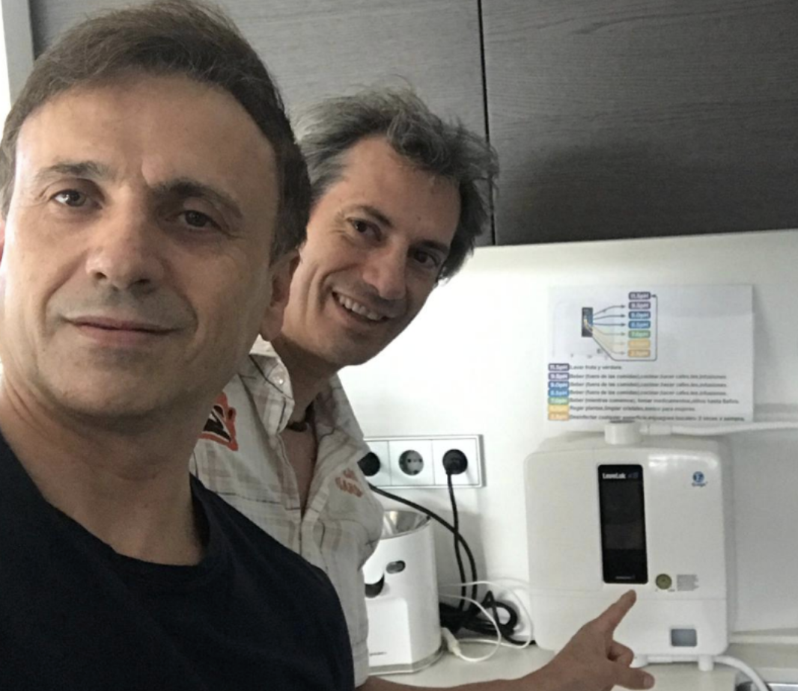

Figuras Públicas

Santiago Segura
En Torrente 2 (2001) aparentaba ser mucho mayor. 25 años después luce notablemente mejor. En medio, una máquina Kangen. Los antioxidantes del agua sin duda han influido.
Ver la transformación
Cristiano Ronaldo
¿Qué elige el hombre que mejor cuida su cuerpo en el mundo? Observamos su decisión y por qué hidratarse como él cuesta menos que el agua embotellada.
Descubrir el motivoKarim Benzema
Longevidad deportiva al más alto nivel. Recuperación muscular y rendimiento sostenido. Pronto compartiremos más detalles.

Jose Mota
Un asombroso ejemplo de vitalidad. A sus 60 años luce mejor, y con más energía, que hace 14 años. La hidratación antioxidante ha estado presente en su rutina.
Ver la transformaciónVoces Médicas Autorizadas
Dr. Gerald Bresnahan
El reputado cardiólogo de los Presidentes de EE.UU., la Reina de Inglaterra y el Papa explica el impacto ineludible del Agua Kangen en la salud.
Ver Aval MédicoPersonas Reales
El caso del Sintrom
Una mujer nos contó que, tras cambiar su hidratación habitual por Agua Kangen®, su médico observó una mejoría tal que decidió retirarle el Sintrom. Un testimonio que documentaremos con detalle.
Tu historia aquí
¿Ya tienes tu máquina Kangen? Comparte tu experiencia y ayuda a otros a descubrir el poder de la hidratación antioxidante.
Contáctanos